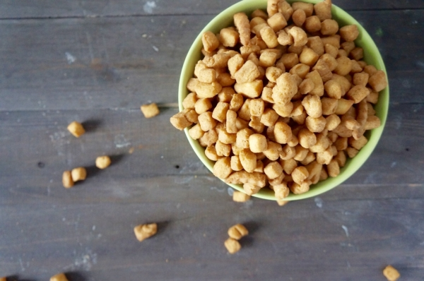

Chin chin

Chin chin
Chin-chin is a popular everyday snack which is common in Nigeria and other West African countries. Chin chin starts with a soft sweet dough made from all-purpose flour, sugar, fat (such as butter, margarine, or oil), flavoring (nutmeg and vanilla are commonly
used but Nigerian red dry pepper may also be present), eggs, and/or water or milk.
Ingredients
- 8 cups (1kg) plain flour (all purpose flour)
- 1 tin peak milk
- 250g margarine
- ½ cup granulated sugar
- 2 teaspoons ground nutmeg
- 2 eggs (optional)
- Some water (only if necessary)
- Vegetable oil (for frying)
Recipe instructions
- Sift the flour into a big enough bowl.
- Add the granulated sugar and ground nutmeg and mix.
- Add the margarine in small scoops. Then rub it into the flour till you get a good mix that feels like crumbs.
- If you are using eggs, break and add them now and mix very well with the contents of the bowl.
- Add the peak milk, mix with a spatula. Then knead by hand till a ball of dough is formed. It may feel dry during the mixing but do not be tempted to add more liquid because the liquid you have in the bowl should be enough. You just need a bit of arm power to mix it. But if you really really can't get it to form a dough,
add a tiny quantity of water bit by bit till the dough is formed.
- When done, cover the bowl and leave the dough to rest for about 15 minutes.
- After 15 minutes, you will notice that the dough is softer. Knead very well.
- Roll out small bits of dough and cut with a knife or a pizza cutter as shown in the video below. Do not use flour to dust Nigerian Chin Chin because this causes the oil to foam during frying. If you mixed the Chin Chin very well, there will be no need to for dusting while cutting the chin chin.
- Pour a generous quantity of vegetable oil into a deep pot and set your stove to high heat. Chin Chin fries best on high heat.
- As the oil heats up, test the temperature with one piece of raw chin chin. If the oil is hot enough, the piece of chin chin should sizzle and come up to the surface almost immediately.
- Once you confirm that the oil is hot enough, gently collect some chin chin from the side of the mound of diced raw chin chin with both hands and throw into the hot oil. Do not overcrowd them.
- Start stirring immediately with a metallic spoon, shaking the spoon from side to side till all the pieces of Chin Chin come apart.
- After that, keep stirring at intervals till the Chin Chin browns to your liking. Remember, the Chin Chin will go one shade darker when you take them off the oil.
- When happy, scoop into a sieve lined with a paper towel. Then fry the rest of the diced raw chin chin in batches.
- After some time, spread them on a cold hard surface lined with newspapers and paper towels so they can cool down completely.
- When completely cool, store in airtight containers. Place it on your kitchen counter, in the fridge or in the freezer.
back to home page